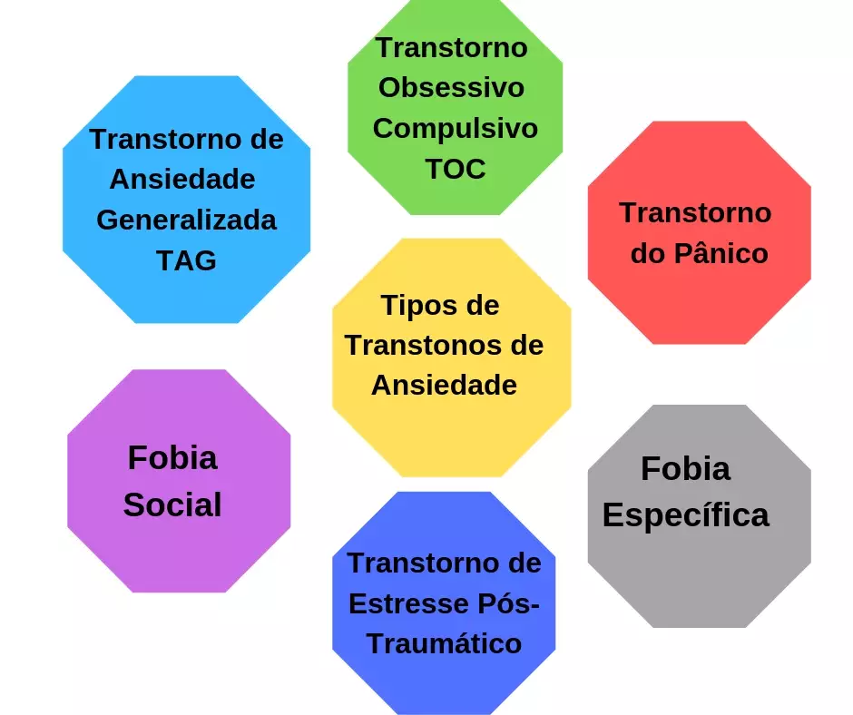

Existem diversas causas que, sozinhas ou combinadas, podem vir a desencadear o transtorno de ansiedade, tais como: traumas, estreasse, genética, doenças físicas e até mesmo a depressão. É comum o paciente alternar entre quadros de ansiedade e quadros de depressão, pois uma condição pode gerar a outra.

Quando a ansiedade acontece com frequência e em um bom alto nível de intensidade, capaz de prejudicar as nossas atividades diárias, é importante ligar o alerta. Pode ser que não se trate mais de um estado “normal” de ansiedade, mas sim, o que conhecemos por TAG (Transtorno de Ansiedade Generalizada).
Esse é o tipo mais comum e frequente de ansiedade, Se caracteriza exclusivamente pela preocupação excessiva em relação a coisas relacionadas à vida ou rotina da pessoa: relações interpessoais, estudo, trabalho, condições de saúde, entre outros. Essa preocupação excessiva acaba por causar sofrimento e por prejudicar as atividades diárias e qualidade de vida da pessoa. Cansaço, irritabilidade, tensão muscular, insônia, palpitação e problemas gastrointestinais são os principais sintomas da TAG.
A agorafobia se caracteriza pelo medo e ansiedade em locais ou situações em que a pessoa não considera seguros. Nesses casos, acontece uma espécie de insegurança que é desproporcional ao perigo que realmente pode acontecer. Exemplos de locais e situações comuns são: filas de supermercado, transporte público ou locais abertos ou na multidão.
Esse tipo de ansiedade se caracteriza pelo medo e ansiedade exagerados em situações de convívio social, nas quais a pessoa possa se sentir sob avaliação ou julgamento. A fobia social vai muito além de um medo ou nervosismo em falar em público. Pessoas com esse tipo de ansiedade, se sentem constrangidas e desconfortáveis em situações comuns do dia a dia, como comer, beber ou pedir uma orientação ou informação.
A síndrome do pânico é um dos tipos de ansiedade mais comum. É caracterizado por ataques de pânico e medo espontâneos, repentinos e inesperados. Esses episódios estão relacionados a crises de ansiedade intensas associados a sintomas físicos, como: aceleração do batimento cardíaco, falta de ar, sudorese e tremores. Entre os sintomas comportamentais, pode haver a sensação de medo de morrer ou perda de controle. Um ataque de pânico normalmente dura de 15 a 30 minutos, segundo o Ministério da Saúde.
Ao passar por um evento traumático, como um assalto, acidente de trânsito ou a perda de alguém especial, podem ocorrer sintomas de um estresse pós-traumático, o qual é caracterizado como um tipo de transtorno de ansiedade. Esse transtorno faz com que a pessoa tenha crises de ansiedade ao relembrar a situação que causou o trauma, apresentando sintomas, como: falta de ar, taquicardia, sudorese e sensação de medo constante.
O TOC é caracterizado pela junção de pensamentos obsessivos com compulsões. Essas obsessões podem se manifestar através de ideias, imagens ou pensamentos que acontecem de maneira repetitiva, gerando ansiedade. Esses ciclos de compulsão e obsessão, além de causar ansiedade, podem trazer prejuízos à rotina de quem o enfrenta.